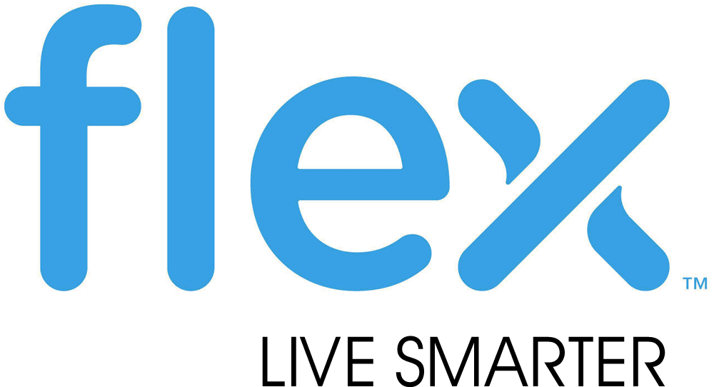

|  |
Test Systems EngineeringMay 2016 - August 2016Flex Ltd. (formerly Flextronics) is an American manufacturing company that focuses on
manufacturing electronics for various companies (e.g. Ford Motor Company). They have multiple
locations in countries such as Singapore, the United States and Canada. During my co-op term at Flex Ltd.
I worked in the Test Systems Engineering department in Markham, Ontario.
|
|---|---|
Systems TesterSeptember 2015 - December 2015Synaptive Medical is a Canadian biomedical startup based in Toronto that creates products for neurosurgeons.
Some of their products includes a neurosurgical robot that can be used as a microscope during neurosurgery
(Brightmatter Drive) and a realistic brain that is used as training for neurosurgery (Brightmatter Simulate).
During my co-op term at Synaptive Medical, I worked as a Systems Tester for the Brightmatter Drive product.
|
|

|
Test Automation Software Designer Co-opJanuary 2016 - April 2016Ericsson is a Swedish networking and telecommunications company that focuses on the infrastructure for cellular networks.
Recently, these networks included the 4G/LTE networks that are provided by many cell phone carriers such as Sprint and Verizon.
During my co-op term at Ericsson, I worked as a Test Automation Software Designer.
|
Overhead Engineering AssistantJanuary 2017 - April 2017The Toronto Transit Commission is the public transportation system set up by the City of Toronto. The Toronto Transit Commission,
provides many routes for their buses, streetcars and subways for the general population of Toronto and the Greater Toronto Area.
During my co-op term with the Toronto Transit Commission, I worked as part of the streetcar team as an Overhead Engineering Assistant.
|